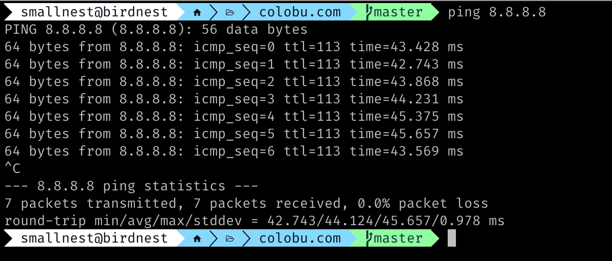

ping是一个网络工具，它被广泛地用于测试网络连接的质量和稳定性。当我们想知道我们的电脑是否能够与其他设备或服务器进行通信时，ping就是我们最好的朋友。当我们想侦测网络之间的连通性和网络质量的时候，也常常使用ping工具测量，因为它是操作系统常带的一个网络诊断工具，小而强大。
ping最初是由Mike Muuss在1983年为Unix系统开发的。它的名字是来自于海军潜艇的声纳系统，声纳系统通过发送一个声波并测量其返回时间来确定目标的位置。Ping的工作原理类似，它发送一个小数据包到目标设备，然后等待该设备返回一个响应，以测量其响应时间和延迟。
当我们使用Ping测试网络连接时，它能够告诉我们两个重要的指标：延迟和丢包率。延迟是指从发送ping请求到接收到响应所需的时间，通常以毫秒为单位计算。丢包率则是指在ping请求和响应之间丢失的数据包的百分比。如果丢包率过高，说明网络连接可能存在问题，导致数据传输不稳定或者甚至无法连接。
除了基本的ping命令外，还有许多其他ping命令和选项可供使用。例如，可以使用“-c”选项指定发送ping请求的次数，使用“-i”选项指定Ping请求之间的时间间隔。此外，还可以使用“-s”选项指定发送ping请求的数据包大小。
尽管ping是一个非常有用的工具，但它也有一些限制。ping测试的结果可能会受到许多因素的影响，例如网络拥塞、防火墙、路由器丢弃等等。此外，一些设备或服务器可能已禁用对ping请求的响应，因此无法获得ping测试的结果。
尽管它有一些限制，但它仍然是网络管理员和用户必备的工具之一。
实现原理
ping工具是基于rfc 792 (ICMP协议)来实现的。它是一份名为“Internet控制消息协议（ICMP）规范”的文件，由Jon Postel和J. Reynolds在1981年9月发布。该文档定义了ICMP协议，该协议是TCP/IP网络协议套件中的一个重要组成部分。
ICMP协议是一种网络层协议，用于传输与网络控制和错误处理相关的消息。该协议通常与IP协议一起使用，用于在Internet上交换信息。RFC 792详细介绍了ICMP协议中的不同消息类型及其用途。ping就是利用发送一个Echo请求得到一个Echo Reply实现的。
其中：
- type: 8代表echo消息, 0代表echo reply消息
- code: 总是0
- checksum:整个消息的校验和
- Identifier：用来匹配echo和reply，我们常常使用进程ID
- Sequence Number:序列号，也是用来匹配echo和reply, 比如同一个进程ID,不同的序列号代表不同的echo
- Data: payload值。所以我们使用ping的时候是可以使用一定大小的数据的，用来测试MTU或者什么
ICMP是封装在IP包中传输的。
等下一篇介绍traceroute工具实现的时候，我们还会介绍ICMP。
对于ping来说，就是简单的发送一个echo消息，收到对应的echo reply消息后计算时延，如果超时未收到reply，就计算一次丢包。
比如我们常用的ping命令，可以显示收包情况和时延，你可以指定发送的总数，最后还会有一个统计信息：

本文的介绍和例子都是针对IPV4的，IPv6类似但又有些不同。
你在网上搜ping.c,很容易搜到通过C语言实现的ping工具，如果使用Go语言，也有几个实现方式。
“作弊”方式
最容易的实现方式就是调用操作系统中自带的ping工具:
1 2 3 4 5 6 7 8 9 10 11 12 13 14 15 16 17 18
| package main import ( "fmt" "os" "os/exec" ) func main() { host := os.Args[1] output, err := exec.Command("ping", "-c", "3", host).CombinedOutput() if err != nil { panic(err) } fmt.Println(string(output)) }
|
简单几行代码。
使用 golang.org/x/net/icmp
Go的net扩展库专门实现了icmp协议。我们可以使用它来实现ping。
插入一个知识点。
如果使用SOCK_RAW实现ping，是需要cap_net_raw权限的,你可以通过下面的命令设置:
1
| setcap cap_net_raw=+ep /path/to/your/compiled/binary
|
在Linux 3.0新实现了一种Socket方式，可以实现普通用户也能执行ping命令:
1
| socket(PF_INET, SOCK_DGRAM, IPPROTO_ICMP)
|
不过你还需要设置:
1
| sudo sysctl -w net.ipv4.ping_group_range="0 2147483647"
|
首先，我们实现non-privileged ping方式的ping, icmp包为我们做了封装，所以我们不必使用底层的socket,而是直接使用icmp.ListenPacket("udp4", "0.0.0.0")来实现。
完整的代码如下：
1 2 3 4 5 6 7 8 9 10 11 12 13 14 15 16 17 18 19 20 21 22 23 24 25 26 27 28 29 30 31 32 33 34 35 36 37 38 39 40 41 42 43 44 45 46 47 48 49 50 51 52 53 54 55 56 57 58 59 60 61 62 63 64 65 66 67 68 69 70 71 72 73 74 75 76 77 78 79 80 81 82 83 84 85 86 87 88 89 90 91 92 93
| package main import ( "fmt" "log" "net" "os" "time" "golang.org/x/net/icmp" "golang.org/x/net/ipv4" ) const ( protocolICMP = 1 ) func main() { if len(os.Args) != 2 { fmt.Fprintf(os.Stderr, "Usage: %s host\n", os.Args[0]) os.Exit(1) } host := os.Args[1] c, err := icmp.ListenPacket("udp4", "0.0.0.0") if err != nil { log.Fatal(err) } defer c.Close() msg := &icmp.Message{ Type: ipv4.ICMPTypeEcho, Code: 0, Body: &icmp.Echo{ ID: os.Getpid() & 0xffff, Seq: 1, Data: []byte("Hello, are you there!"), }, } wb, err := msg.Marshal(nil) if err != nil { log.Fatal(err) } start := time.Now() if _, err := c.WriteTo(wb, &net.UDPAddr{IP: net.ParseIP(host)}); err != nil { log.Fatal(err) } reply := make([]byte, 1500) err = c.SetReadDeadline(time.Now().Add(5 * time.Second)) if err != nil { log.Fatal(err) } n, peer, err := c.ReadFrom(reply) if err != nil { log.Fatal(err) } duration := time.Since(start) msg, err = icmp.ParseMessage(protocolICMP, reply[:n]) if err != nil { log.Fatal(err) } switch msg.Type { case ipv4.ICMPTypeEchoReply: echoReply, ok := msg.Body.(*icmp.Echo) if !ok { log.Fatal("invalid ICMP Echo Reply message") return } if peer.(*net.UDPAddr).IP.String() == host && echoReply.Seq == 1 { fmt.Printf("Reply from %s: seq=%d time=%v\n", host, msg.Body.(*icmp.Echo).Seq, duration) return } default: fmt.Printf("Unexpected ICMP message type: %v\n", msg.Type) } }
|
关键代码都加了注释，主要注意回包的解析和回包的判断。尤其是回包的判断，我们在下一章实现traceroute的时候尤其需要注意这一点。
使用 ip4:icmp 实现
即使我们想实现privileged ping，我们也不需要直接使用raw socket，还是使用icmp包。
在这种场景下，我们的network需要是ip4:icmp,能够发送ICMP包，而不是上面的udp4。
1 2 3 4 5 6 7 8 9 10 11 12 13 14 15 16 17 18 19 20 21 22 23 24 25 26 27 28 29 30 31 32 33 34 35 36 37 38 39 40 41 42 43 44 45 46 47 48 49 50 51 52 53 54 55 56 57 58 59 60 61 62 63 64 65 66 67 68 69 70 71 72 73 74 75 76 77 78 79 80 81 82 83 84 85 86 87 88 89 90 91 92 93 94 95
| package main import ( "fmt" "log" "net" "os" "time" "golang.org/x/net/icmp" "golang.org/x/net/ipv4" ) const ( protocolICMP = 1 ) func main() { if len(os.Args) != 2 { fmt.Fprintf(os.Stderr, "usage: %s host\n", os.Args[0]) os.Exit(1) } host := os.Args[1] dst, err := net.ResolveIPAddr("ip", host) if err != nil { log.Fatal(err) } conn, err := icmp.ListenPacket("ip4:icmp", "0.0.0.0") if err != nil { log.Fatal(err) } defer conn.Close() msg := &icmp.Message{ Type: ipv4.ICMPTypeEcho, Code: 0, Body: &icmp.Echo{ ID: os.Getpid() & 0xffff, Seq: 1, Data: []byte("Hello, are you there!"), }, } msgBytes, err := msg.Marshal(nil) if err != nil { log.Fatal(err) } start := time.Now() _, err = conn.WriteTo(msgBytes, dst) if err != nil { log.Fatal(err) } reply := make([]byte, 1500) for i := 0; i < 3; i++ { err = conn.SetReadDeadline(time.Now().Add(5 * time.Second)) if err != nil { log.Fatal(err) } n, peer, err := conn.ReadFrom(reply) if err != nil { log.Fatal(err) } duration := time.Since(start) msg, err = icmp.ParseMessage(protocolICMP, reply[:n]) if err != nil { log.Fatal(err) } switch msg.Type { case ipv4.ICMPTypeEchoReply: echoReply, ok := msg.Body.(*icmp.Echo) if !ok { log.Fatal("invalid ICMP Echo Reply message") return } if peer.String() == host && echoReply.ID == os.Getpid()&0xffff && echoReply.Seq == 1 { fmt.Printf("reply from %s: seq=%d time=%v\n", dst.String(), msg.Body.(*icmp.Echo).Seq, duration) return } default: fmt.Printf("unexpected ICMP message type: %v\n", msg.Type) } } }
|
和上面的例子比较，主要是发送的逻辑不一样，大同小异，发送额度内容都是ICMP Echo消息，只不过这次发送的失效，地址不是UDP地址，而是IP 地址。
使用go-ping
虽然Go net扩展库提供了icmp包，方便我们实现ping能力，但是代码还是有点偏底层的处理，网上有一个go-ping/ping库，还是被使用很多的，提供了更高级或者说更傻瓜的方法。
三年了，疫情给世界带来的影响已经潜移默化到影响到互联网，影响到开源社区。我看到很多的开源项目因为一些原因都不再维护了，包括这个go-ping项目，光靠作者用爱发电无法做到持久，有点遗憾，不过好歹是它已经比较成熟了，我们项目中使用没有问题。prometheus社区基于这个项目，维护了一个新的项目：pro-bing。
它的README文档中的例子已经很少的解释了它的使用方法，你可以利用它实现一个类似ping工具的功能，如果想大批量实现ping的功能，这个库就不合适了。
下面代码就是一个ping的基本功能，没什么好说的，ping3次得到结果:
1 2 3 4 5 6 7 8 9 10 11 12 13
| pinger, err := probing.NewPinger("github.com") if err != nil { panic(err) } pinger.Count = 3 err = pinger.Run() if err != nil { panic(err) } stats := pinger.Statistics() pretty.Println(stats)
|
如果要实现Linux下ping的功能，可以稍微复杂些:
1 2 3 4 5 6 7 8 9 10 11 12 13 14 15 16 17 18 19 20 21 22 23 24 25 26 27 28 29 30 31 32 33 34 35 36 37
| pinger, err = probing.NewPinger("github.com") if err != nil { panic(err) } c := make(chan os.Signal, 1) signal.Notify(c, os.Interrupt) go func() { for _ = range c { pinger.Stop() } }() pinger.OnRecv = func(pkt *probing.Packet) { fmt.Printf("%d bytes from %s: icmp_seq=%d time=%v\n", pkt.Nbytes, pkt.IPAddr, pkt.Seq, pkt.Rtt) } pinger.OnDuplicateRecv = func(pkt *probing.Packet) { fmt.Printf("%d bytes from %s: icmp_seq=%d time=%v ttl=%v (DUP!)\n", pkt.Nbytes, pkt.IPAddr, pkt.Seq, pkt.Rtt, pkt.TTL) } pinger.OnFinish = func(stats *probing.Statistics) { fmt.Printf("\n--- %s ping statistics ---\n", stats.Addr) fmt.Printf("%d packets transmitted, %d packets received, %v%% packet loss\n", stats.PacketsSent, stats.PacketsRecv, stats.PacketLoss) fmt.Printf("round-trip min/avg/max/stddev = %v/%v/%v/%v\n", stats.MinRtt, stats.AvgRtt, stats.MaxRtt, stats.StdDevRtt) } fmt.Printf("PING %s (%s):\n", pinger.Addr(), pinger.IPAddr()) err = pinger.Run() if err != nil { panic(err) }
|
前面也说了，处理返回的消息并和发送请求做匹配是一个技术点，那么go-ping是怎么实现的呢?主要是下面的代码:
1 2 3 4 5 6 7 8 9 10 11 12 13 14 15 16 17 18 19 20 21 22 23 24 25 26 27 28 29 30 31 32 33 34
| switch pkt := m.Body.(type) { case *icmp.Echo: if !p.matchID(pkt.ID) { return nil } if len(pkt.Data) < timeSliceLength+trackerLength { return fmt.Errorf("insufficient data received; got: %d %v", len(pkt.Data), pkt.Data) } pktUUID, err := p.getPacketUUID(pkt.Data) if err != nil || pktUUID == nil { return err } timestamp := bytesToTime(pkt.Data[:timeSliceLength]) inPkt.Rtt = receivedAt.Sub(timestamp) inPkt.Seq = pkt.Seq if _, inflight := p.awaitingSequences[*pktUUID][pkt.Seq]; !inflight { p.PacketsRecvDuplicates++ if p.OnDuplicateRecv != nil { p.OnDuplicateRecv(inPkt) } return nil } delete(p.awaitingSequences[*pktUUID], pkt.Seq) p.updateStatistics(inPkt) default: return fmt.Errorf("invalid ICMP echo reply; type: '%T', '%v'", pkt, pkt) }
|
首先检查body必须是*icmp.Echo类型，这是基本操作。接着检查pkt.ID,这一下就把非本程序的包ICMP echo reply包过滤了。
这里它在发送的payload中还加上自己的uuid和发送的时间戳。
这里还处理了重复的包， uuid+seq标识同一个Echo请求。
通过这几个例子，你应该了解了ping工具的底层实现，收藏起来，遇到相关的问题的时候不妨返回来查一查。
下一篇，我们讲介绍traceroute工具的实现，相对ping来说更复杂了，但是都和ICMP协议相关。如果你有感兴趣的网络话题，“点击原文”进行讨论。
Go高级网络编程系列